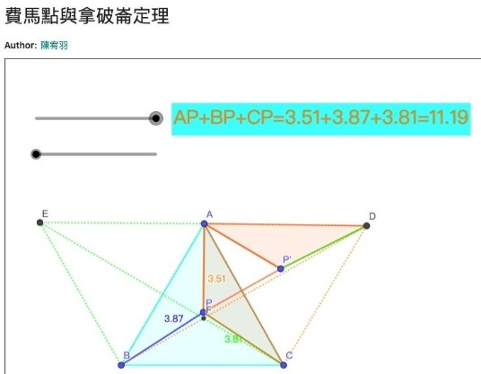
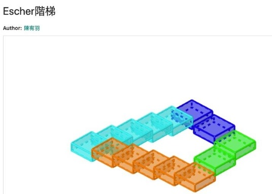
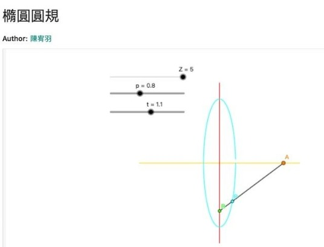
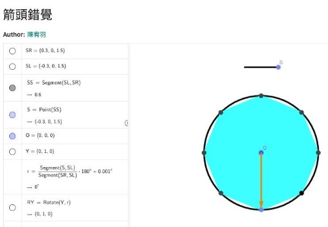
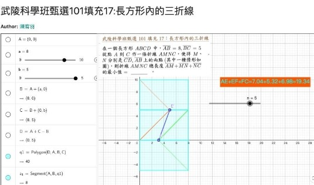
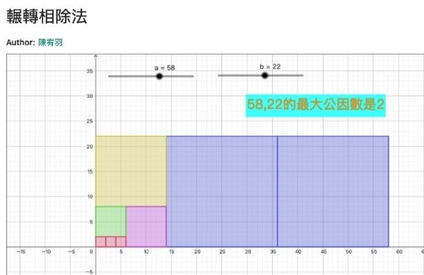
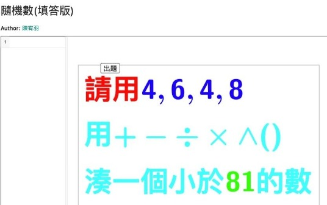
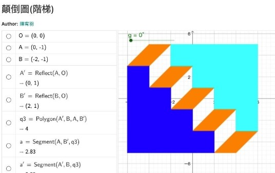

『對知識真正熱愛的學生，就是老師沒給作業，也會認真為自己佈置作業。』
『期待第二期的開課，我要挑戰更多有趣的任務與作業』 CMG2 (2022-1) 小三 宥羽
「程式設計，GGB, Scracth, Python, C/C++ 免費公開課 正在報名中！」
https://www.facebook.com/groups/695697124716309/permalink/1042804673338884/
---
朱安強博士評語
宥羽是寒假參與獵豹 CMG2 的小三學生，雖然 CMG2 預設小五以上的學生，但他的表現毫不遜色與高年級的同學。
最可貴就是他的學習態度。他家長說，他在寒假課程結束後，開始每週佈置些任務，讓自己定期學習，用 GGB 進行探究。
陸續完成了中學程度的『輾轉相除法圖示法』，多數學生對輾轉相除法的認識往往是『只知其術，不知其意』。但通過這次的操作，小三宥羽，也掌握這輾轉相消化繁為簡的迭代方法。
他還挑戰了許多高中課程的任務，在『箭頭錯覺』與 『Penrose 階梯』掌握了空間向量與序列的概念。並且還學會利用『軌跡工具』來還學會了橢圓圓規的製作。還通過 GGB 探究了經典幾何極值費馬點問題。
這些 GGB 任務，對不少中學數學老師學起來都覺得困難，但小三的宥羽就慢慢看著影片回放，能去享受製作探究的過程。在製作當下也同時窺探了這些數學原理。
最後，讓我們一同欣賞幾個宥羽的 GGB 作品與他寒假的學習心得。
==== ==== ==== ====
by 小三 宥羽
課程整體：
1.謝謝老師教我這一期的GGB。
2.讓我學會很多指令、用試算表和用3D繪圖區、用很多好玩的工具、操控版面等等……
3.在操作的途中也遇到一些困難，尤其是在輸入指令時和在輸入比較長的動態動態文字時，比較容易會出錯。
印象較深的題目：
1.隨機數(填答版) https://www.geogebra.org/m/wrrnmmpj
這是我覺得最好玩的，因為只要用Random指令按一按它就會自動出題。
2.顛倒圖(階梯) https://www.geogebra.org/m/z8emgwbs
讓他轉一轉前牆和後牆會變來變去。
3.顛倒圖像錯覺：下雨前後(練習)坐標 https://www.geogebra.org/m/je3b4yz4
讓他轉一轉下雨前就變下雨後。
課後自學：
1.課後自學我通常會挑選繪製國旗的
2.我最喜歡的是Escher階梯 https://www.geogebra.org/m/dnerzhs9 這個階梯轉一轉視角會讓它看起來有點重合。
3.課後自學的時候，我會遇到一些指令包指令的東西去做串列，例如:Escher階梯，有時候我就會漏一些東西或出一寫錯。
輾轉相除法 https://www.geogebra.org/m/tmj2dqqm
費馬點 https://www.geogebra.org/m/z7dxeetb
橢圓圓規 https://www.geogebra.org/m/xd66syxz
長方形內的三折線 https://www.geogebra.org/m/cxhcgfpa
Escher 階梯 https://www.geogebra.org/m/dnerzhs9
謝謝老師！希望第2期可以趕快開課。
https://www.facebook.com/groups/695697124716309/permalink/1046005263018825/







